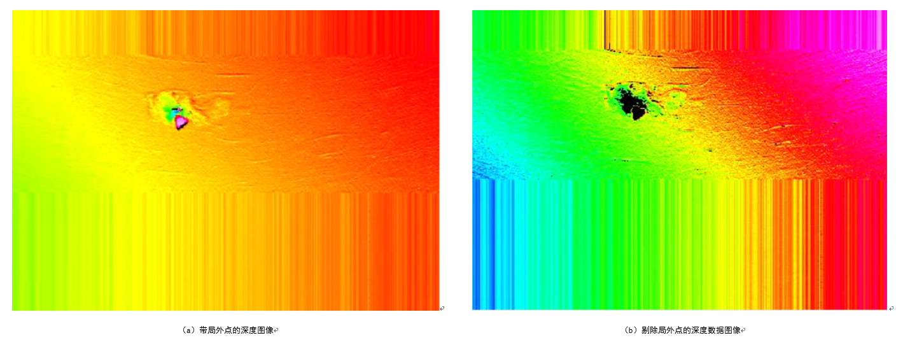
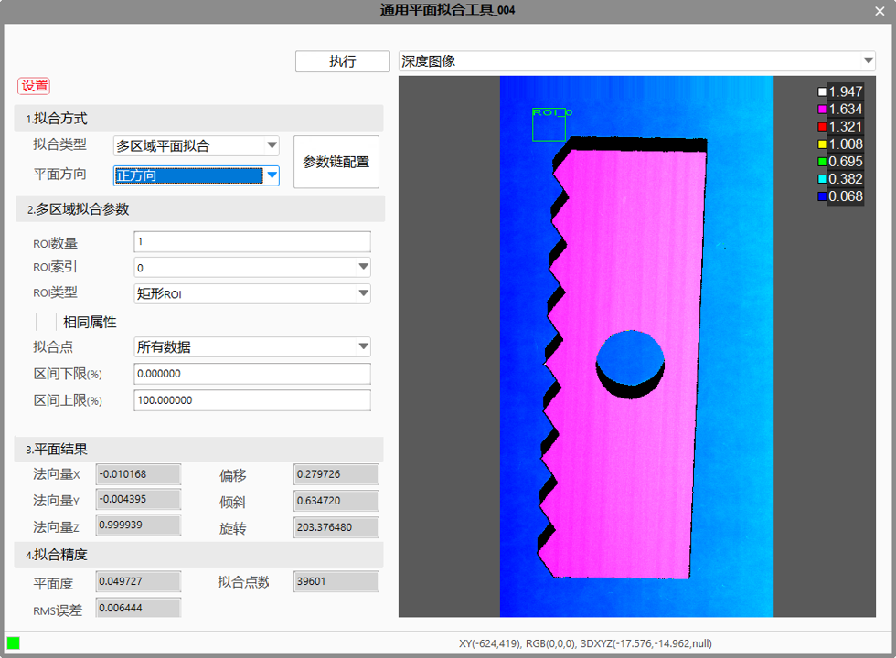
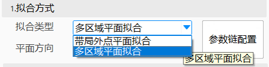
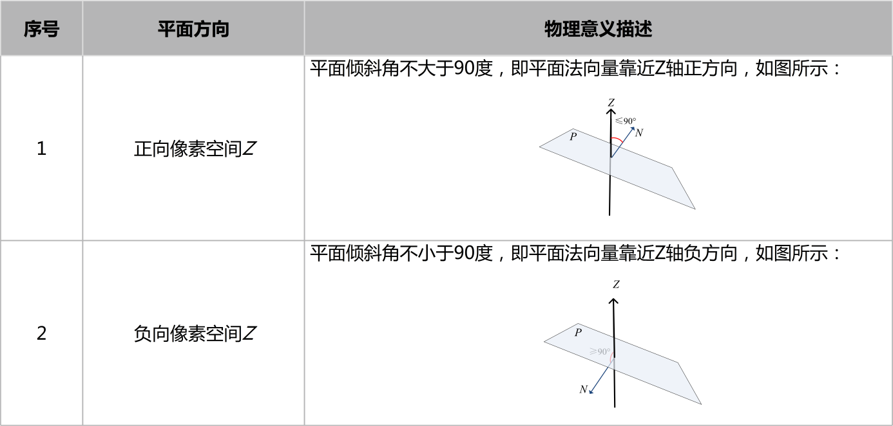
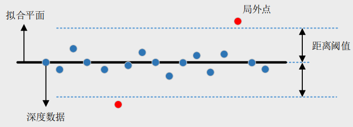
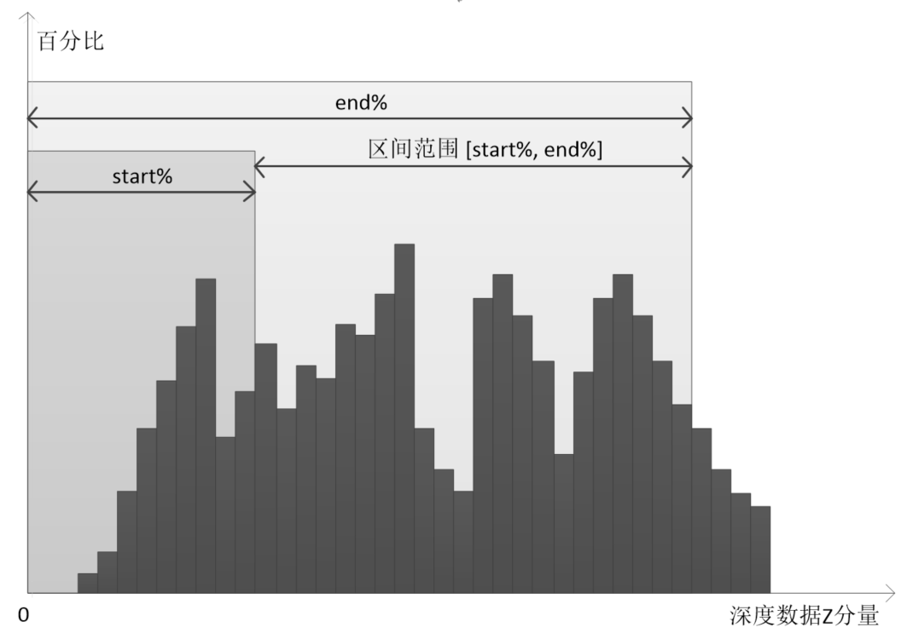
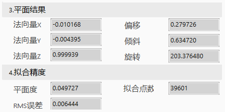
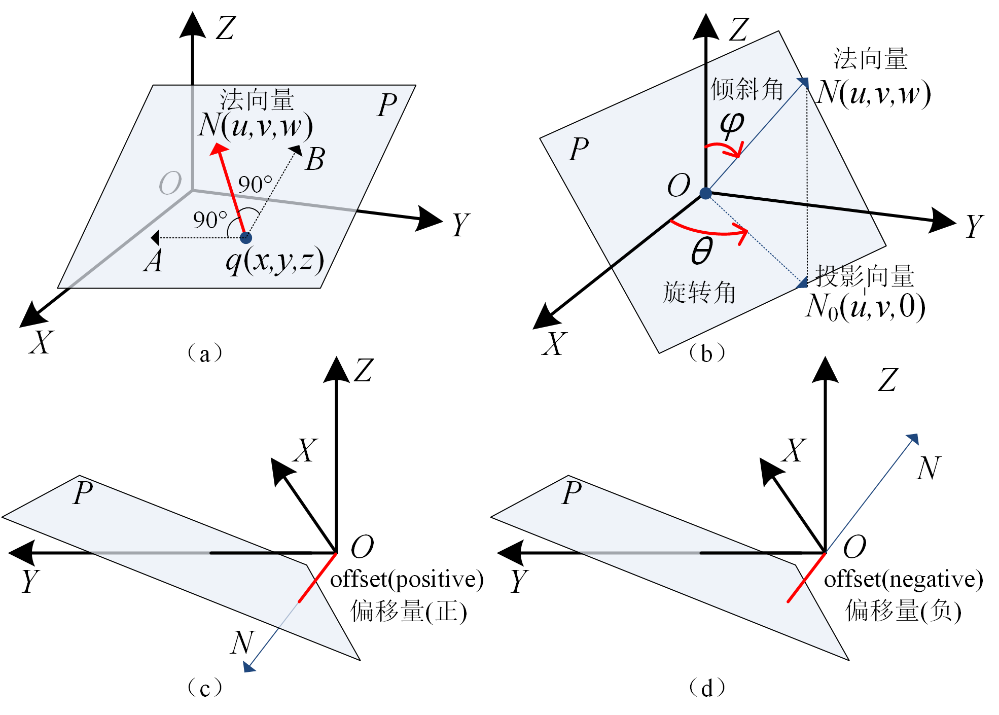

Công cụ khớp phẳng thông dụng tích hợp công cụ khớp phẳng có loại bỏ điểm ngoại lai và công cụ khớp phẳng 2, chức năng là khớp một hoặc nhiều mặt phẳng trong vùng cố định của ảnh chiều sâu, cung cấp cho các công cụ đo lường tiếp theo sử dụng.
Công cụ khớp phẳng có loại bỏ điểm ngoại lai có thể loại bỏ các điểm ngoại lai trong ảnh dữ liệu chiều sâu, dựa trên dữ liệu điểm nội lai để tính toán biểu thức giải tích của mặt phẳng ba chiều, từ đó có thể thực hiện các thao tác tiếp theo như chiếu, đo chiều cao và đo thể tích trên mặt phẳng cơ sở này.

Công cụ khớp phẳng đa vùng dựa vào một số điểm không gian ba chiều để tính toán biểu thức giải tích của mặt phẳng ba chiều, có thể cấu hình hình dạng và đặc trưng của vùng khớp mặt phẳng. Như hình dưới đây cho thấy, tổng cộng có bốn vùng khớp, hình dạng của bốn vùng này lần lượt là hình chữ nhật affine, đa giác, đa giác, elip. Có thể sử dụng các điểm đặc trưng trong bốn vùng này (như giá trị trung bình, trung vị, v.v.) hoặc toàn bộ dữ liệu để khớp mặt phẳng. Công cụ khớp phẳng đa vùng hỗ trợ cho sự đa dạng hóa cách thức hình thành mặt phẳng cơ sở trong các dự án thực tế.


Thông thường hầu hết các dự án chỉ cần chọn khớp phẳng có loại bỏ điểm ngoại lai là đủ; công cụ này có thể lọc bỏ nhiễu do điểm ngoại lai gây ra, nhằm đảm bảo độ ổn định của mặt phẳng khớp.
Khớp phẳng đa vùng chủ yếu được phát triển sử dụng cho dự án đo chiều cao ROI đa vùng, đặc điểm là mỗi vùng ROI đều có thể tự thiết lập tham số khớp phù hợp, nếu có nhu cầu này thì mới chọn sử dụng.
Khi chọn công cụ khớp phẳng có loại bỏ điểm ngoại lai, mặc định không kích hoạt khớp tập điểm 3D, chuỗi tham số đầu vào là ảnh chiều sâu và biến đổi tuyến tính 2D; nếu kích hoạt khớp tập điểm 3D, thì chuỗi tham số cần đầu vào là tập hợp các điểm 3D.
Khi chọn khớp phẳng đa vùng, chuỗi tham số đầu vào là ảnh chiều sâu và biến đổi tuyến tính 2D.
Hướng mặt phẳng chỉ hướng dương âm của vector pháp tuyến của kết quả mặt phẳng khớp cuối cùng, thông thường dùng mặc định là được. Nếu cần sử dụng kết quả vector pháp tuyến thì mới tiến hành thiết lập.

| Tên tham số | Mô tả tham số |
|---|---|
| Kích hoạt khớp tập điểm 3D | Chọn “Có”, trong chuỗi tham số sẽ hiển thị tham số tập điểm 3D đầu vào, và sử dụng tập điểm 3D này để khớp mặt phẳng. |
| Khoảng cách phán đoán điểm ngoại lai | Giá trị khoảng cách tối đa từ điểm dữ liệu chiều sâu tham gia khớp đến mặt phẳng khớp |
| Độ tin cậy kết quả | Đo lường mức độ tin cậy khi sử dụng điểm nội lai để xây dựng mặt phẳng khớp, độ tin cậy càng lớn thì mặt phẳng khớp càng đáng tin cậy |
| Tỷ lệ điểm ngoại lai | Tỷ lệ điểm ngoại lai chiếm tổng điểm dữ liệu chiều sâu |
| Loại ROI | Vùng cần khớp, được chia thành 8 loại: toàn bộ ảnh, hình chữ nhật, hình chữ nhật affine, hình tròn, đoạn vòng tròn, elip, đa giác, đa hình chữ nhật affine. |
| Kích hoạt mặt nạ | Dùng để lọc vùng không cần khớp, thêm mặt nạ cho phần này |
| Kích hoạt lấy mẫu | Có thực hiện lấy mẫu để khớp hay không, chọn “Có” thì sẽ hiển thị tham số bán rộng lấy mẫu |
| Khoảng cách lấy mẫu | Cách nhau bao nhiêu khoảng cách thì lấy mẫu một lần, có thể rút ngắn thời gian khớp mặt phẳng |
Minh họa tham số liên quan：
Ngưỡng khoảng cách：chỉ giá trị khoảng cách tối đa từ điểm đến mặt phẳng khớp；
Điểm ngoại lai：chỉ các điểm dữ liệu chiều sâu có khoảng cách đến mặt phẳng khớp không thỏa mãn ngưỡng khoảng cách；
Điểm nội lai：chỉ các điểm dữ liệu chiều sâu có khoảng cách đến mặt phẳng khớp nằm trong ngưỡng khoảng cách；
Tỷ lệ điểm ngoại lai：tỷ lệ điểm ngoại lai chiếm tổng điểm dữ liệu chiều sâu, trong đó tổng điểm nội lai và điểm ngoại lai bằng tổng điểm dữ liệu chiều sâu；
Độ tin cậy：đo lường mức độ tin cậy khi sử dụng điểm nội lai để xây dựng mặt phẳng khớp, độ tin cậy càng lớn thì mặt phẳng khớp càng đáng tin cậy.

| Tên tham số | Mô tả tham số |
|---|---|
| Số lượng ROI | Tham số này chỉ định số lượng ROI dùng để khớp mặt phẳng, hỗ trợ tối đa 40 ROI |
| Chỉ số ROI | Chỉ số ROI và tham số hiện tại đã chọn, tham số này dùng để chọn vùng khớp thứ i và thiết lập tham số cho nó |
| Loại ROI | Vùng cần khớp, được chia thành 6 loại: hình chữ nhật, hình chữ nhật affine, hình tròn, đoạn vòng tròn, elip, đa giác. |
| Điểm khớp | Chọn một loại điểm đặc trưng trong vùng ROI để thực hiện khớp mặt phẳng, được chia thành 6 loại: giá trị trung bình, trung vị, trọng tâm, Z lớn nhất, Z nhỏ nhất, toàn bộ dữ liệu |
| Giới hạn trên/dưới của khoảng | Dữ liệu chiều sâu của vùng khớp được sắp xếp theo thành phần Z từ nhỏ đến lớn, sau đó lấy giá trị trung bình, trung vị hoặc các điểm đặc trưng khác của dữ liệu chiều sâu nằm trong khoảng giới hạn dưới (start%) ~ giới hạn trên (end%). Phạm vi giá trị: giới hạn dưới [0,100), giới hạn trên (0,100], và giới hạn dưới nhỏ hơn giới hạn trên |
| Thuộc tính giống nhau | Sau khi tick chọn thuộc tính giống nhau, hình dạng và kích thước của tất cả ROI sẽ giữ一致 cũng như các tham số khớp tương ứng đều được thống nhất, tiện cho việc điều chỉnh tham số ban đầu. Sau khi điều chỉnh xong nên tắt tick chọn. |
Minh họa tham số liên quan
Giới hạn trên/dưới của khoảng khớp：giả sử phạm vi khoảng là [start%, end%], thì chỉ có dữ liệu nằm trong phạm vi khoảng mới là hợp lệ; như Hình 2 cho thấy, khi cấu hình tham số cho vùng khớp, dữ liệu chiều sâu trong vùng được sắp xếp theo thành phần Z từ nhỏ đến lớn, sau đó lấy giá trị trung bình, trung vị hoặc các điểm đặc trưng khác của dữ liệu chiều sâu nằm trong khoảng start% ~ end%.


| Tên tham số | Mô tả tham số |
|---|---|
| Ảnh chiều sâu | Ảnh chiều sâu tham gia khớp mặt phẳng |
| Mặt phẳng khớp | Kết quả khớp mặt phẳng đầu ra, bao gồm vector pháp tuyến của mặt phẳng, độ lệch, góc nghiêng, góc xoay |
| Độ phẳng | Độ phẳng của mặt phẳng đầu ra, tức là độ lệch lớn nhất trừ độ lệch nhỏ nhất, đơn vị: mm |
| Lỗi RMS | Giá trị lỗi khớp của mặt phẳng đầu ra |
| Số điểm khớp | Số lượng điểm tham gia vào khớp mặt phẳng đầu ra |
| Kết quả thực thi | Kết quả thực thi của công cụ |
| Thời gian thực thi | Thời gian thực thi của công cụ |
Minh họa tham số liên quan
Vector pháp tuyến：vector N vuông góc với mặt phẳng, biểu thị hướng của mặt phẳng trong không gian ba chiều, như Hình 2(a) cho thấy.
Góc nghiêng：góc φ giữa hướng dương trục Z theo chiều kim đồng hồ với vector pháp tuyến N của mặt phẳng, phạm vi giá trị：[0,π] ，như Hình 2(b) cho thấy.
Góc xoay：góc θ giữa hướng dương trục X theo chiều ngược kim đồng hồ với vector chiếu N0 của vector pháp tuyến, phạm vi giá trị：[0, 2π) ，như Hình 2(b) cho thấy.
Độ lệch：khoảng cách lệch khi di chuyển gốc tọa độ đến mặt phẳng hiện tại P, nếu hướng di chuyển trùng với hướng vector pháp tuyến thì độ lệch là dương; ngược lại là âm, như Hình 2(c)、(d) cho thấy.

Không có
参见“\Samples\3D\深度图\通用平面拟合工具.gvp”